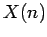
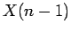
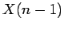
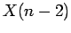
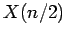
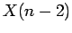
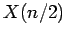

A side-product of this proof is a straightforward procedure for generating unforgeable sequences.
If  is the set of unforgeable sequences of length  , then for odd
, then for odd  we
can generate from  as follows. There are twice as many elements
in as and they can be generated by taking each sequence from
, splitting it in half and then twice rebuilding it, once with
a zero in the middle and once with a one.
we
can generate from  as follows. There are twice as many elements
in as and they can be generated by taking each sequence from
, splitting it in half and then twice rebuilding it, once with
a zero in the middle and once with a one.
For even  , we can generate from  by splitting
each sequence from and putting a two digit sequence between
the two halves. This gives four times as many elements as in ,
but some of the new ones are forgeable and must be removed. These are
the ones where the first half of the sequence is the same as the second half
of the sequence or the half sequences themselves are forgeable (not elements of
).
, we can generate from  by splitting
each sequence from and putting a two digit sequence between
the two halves. This gives four times as many elements as in ,
but some of the new ones are forgeable and must be removed. These are
the ones where the first half of the sequence is the same as the second half
of the sequence or the half sequences themselves are forgeable (not elements of
).